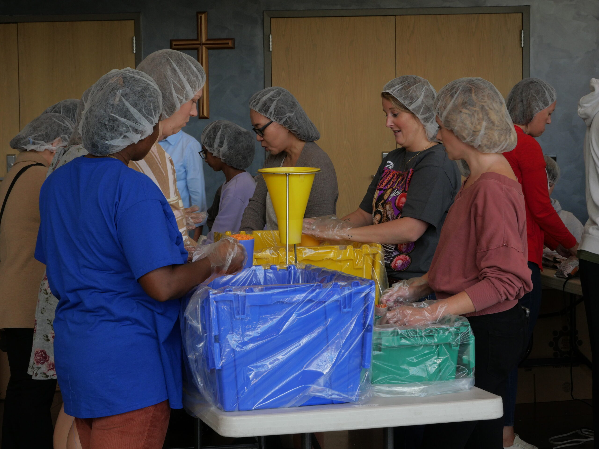

“For we are God’s masterpiece. He has created us anew in Christ Jesus, so we can do the good things he planned for us long ago.”
Jesus calls us to be in community, and as a church we are a body of believers who are in community with each other, united in purpose and love. But, He also calls us to be the light to the world and to love our neighbors as ourselves. Thus it is our job to reflect the image of Christ to those around us and we do that by bringing awareness of Christian Fellowship Church and our resources to people in our surrounding areas.

At CFC, we believe every follower of Christ is called to live on mission—right where God has placed them. We are known for building intentional relationships, rooted in love, Spirit-led, and focused on expressing the gospel.
We live this out by:
Let’s be a people who live with purpose and love boldly in Jesus’ name.
More Info